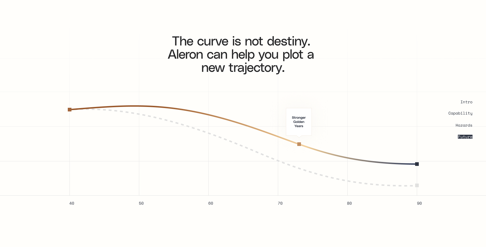
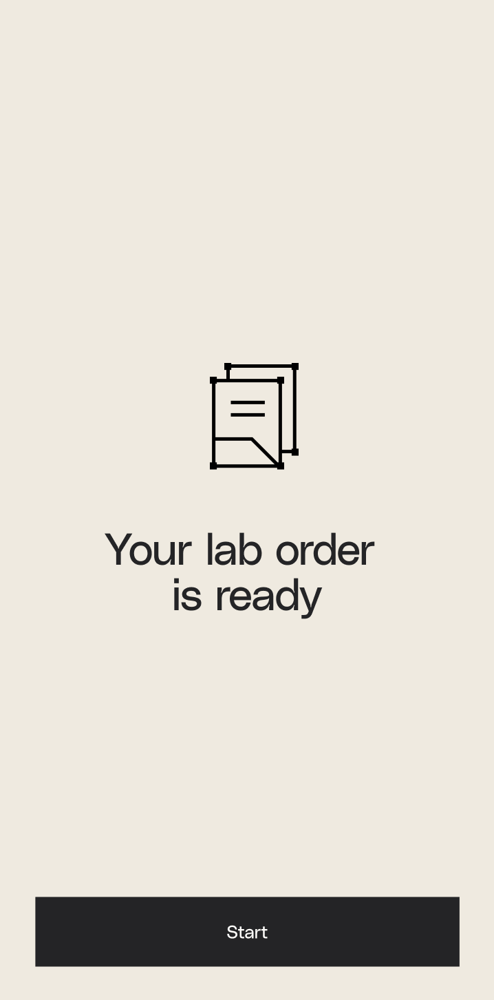

Aleron MD
Design system
A production kit for building Aleron surfaces quickly: semantic tokens, shared components, page patterns, source assets, and copyable snippets.
Separate visual-language sources, live implementation evidence, identity assets, and excluded artifacts before deriving tokens.
Translate approved sources into semantic color, type, spacing, layout, shape, and motion tokens.
Compose pages from one hero implementation pattern, one trajectory proof pattern, forms, login, and CTA blocks.
Brand
Identity assets
These are the reusable brand marks. They are not layout references and should not carry page behavior with them.


Source map
What belongs where
The Reference page defines visual language. The live hero defines implementation mechanics. Identity assets define marks. Excluded artifacts stay out of the system.
- Figma page `Reference` / `785:6560`.
- Hero visual lane, trajectory lane, illustration lanes, texture moments, palette.
- Raw screenshot CTA and header details are not production rules.
- `figma-hero-shot.html` and `figma-layer-manifest.md`.
- Layer stack, carousel mechanics, parallax mechanics.
- Production header and CTA behavior.
- Lowercase icon, favicon set, wordmark assets.
- Use marks as marks, not as layout references.
- Old curve thumbnail and dark gold `curve.jpg`.
- Raw `Demo` CTAs and rust Login tiles.
- Rounded, frosted, or pitch-deck styling.
Use photography, gradient field, rectangular mosaic blocks, and white wordmark. CTA/header behavior is sourced from the live hero only.

Cream grid, semantic gradient curve, square markers, dashed counterfactuals, and compact annotation cards.

Sparse mobile status screens with one centered illustration or icon and one bottom-anchored CTA.
Swatches and gradients become tokens only after source-lane assignment.
Foundations
Tokens
Two tiers. The reference palette holds raw Figma pigments and is swatch-only: never bind it to text. Semantic roles are the only values a page consumes. Avoid page-specific hex outside these tokens.
Every text token meets AAA contrast on every surface it is approved for: 7:1 for normal text, 4.5:1 for large text (>=18px, or >=14px bold). Ratios below are measured, not estimated. Reference pigments are exempt because they never carry text.
Reference palette · swatch only
Raw Figma pigments. Each carries a ✓ when its fill is verified exact against the source. Full audit trail with node IDs is in the appendix below.
Figma verification audit · 11/11 exact, zero drift
--amd-color-surface-pageFigma 785:7679 · #FFFEFB exact--amd-color-surface-creamFigma 785:7678 · #EFEAE0 exact--amd-color-surface-darkFigma 785:7674 · #242426 exact--amd-color-surface-burgundyFigma 785:7675 · #2C1F29 exact--amd-color-reference-blueFigma 785:7676 · #3C4662 exact--amd-color-rust-referenceFigma 785:7700 · #A35520 exact--amd-color-gold-referenceFigma 785:7677 · #CD9453 exact--amd-reference-warm-fadeFigma 785:7713 · gradient stops exact--amd-reference-main-fadeFigma 785:7673 · gradient stops exact--amd-color-rust-figmaFigma 785:7209 · #A2653B exact (trajectory marker)--amd-color-navy-figmaFigma 785:7210 · #2C3240 exact (trajectory axis)Semantic text roles · measured AAA
--amd-color-text-primaryon page / card / cream15.5:1--amd-color-text-secondary7.3 card / 6.1 cream7.3:1--amd-color-text-tertiarylarge ≥18px5.0:1--amd-color-text-accent7.5 cream / 8.9 page7.5:1--amd-color-text-accent-on-darkon #2424267.1:1Use: bind text only to a semantic role. Secondary on light surfaces only; tertiary for large text only.
Never: set text in a reference pigment (rust-reference, gold-reference, slate-blue). Those are swatch-only.
Spacing
--amd-space-14 pxDetail--amd-space-416 pxInline--amd-space-632 pxPanel--amd-space-864 pxSection--amd-space-10128 pxHeroLayout
--amd-layout-max1240 pxPage--amd-layout-gutter20 to 64 pxEdges--amd-layout-section-y72 to 132 pxSections--amd-break-tablet980 pxBreakpoint--amd-radius-none0 pxShapeTypography
Type scale
Inter Tight for display and headings, Inter for body, Source Serif 4 for editorial accents, JetBrains Mono for code. Sizes are fluid; the clamp range is shown per level.
Components
Buttons, cards, navigation, alerts
<a class="amd-button amd-button-primary">Apply for Membership</a>
Use: one primary action per view. States: default, hover, disabled, loading.
Never: two primaries side by side, or rounded corners.
<a class="amd-button amd-button-cream">Apply for Membership</a>
Use: cream fill for the primary action on charcoal; ghost outline for the secondary. One cream button per dark surface.
Never: a dark-on-dark button, or two cream fills competing on the same panel.
Charcoal bar, lowercase wordmark left. Desktop shows nav plus one ghost Log In; mobile collapses to a menu toggle. Stays solid on scroll, never transparent over content.
Compact card
No media. Used in lists and selectable grids; rust inset ring marks the selected state.
Anatomy: media, tag, title, body, footer (meta + action). Compact drops media.
Never: a card without a title, or a media slot with no aspect ratio.
Intake checklist, ID verification, and membership terms. The selected tab carries the rust underline; the panel below swaps on change.
Use: 4 to 6 peer sections; exactly one active at a time.
Never: mix tabs with accordion disclosure, or leave zero tabs selected.
We received the intake and will follow up by email.
Return your sample within 7 days to keep results valid.
Add an email address before submitting.
Universal data-surface states for any card, table, or list: every fetch-backed component ships all four. The empty state names the next action; the error state always offers a recovery path.
Retry or contact your care team.
Forms
Inputs and validation
<div class="amd-field is-error"> <label>Email</label> <input class="amd-input" type="email"> <span class="amd-help">Enter a valid email address.</span> </div>
Patterns
Page sections
z 1Background planePhoto base and broad background color/image crop. Uses `--slide-image-shift` during carousel transitions.z 2Mid-blocks planeFigma color blocks and grid masses. Uses `--slide-float-shift` plus scroll parallax.z 3Subject planeForeground person or scene cutout. Travels with the image shift, not the floating-block shift.z 4Anchor block planeStatic Figma anchor shapes. Transform stays `none` so the frame does not drift.z 8 to 9DOM chromeLogo, Log In, headline, CTA, counters, and dots are real DOM above the artwork.Carousel mechanics
Inactive slides start at `--slide-image-shift: 112vw` and `--slide-float-shift: 230vw`. Active slides set both to `0px`. Exiting slides move to `-58vw` image shift and `-170vw` float shift.
Scroll parallax
On scroll, only the mid-blocks plane receives `--hero-floating-block-shift`. Formula: progress equals `scrollY / heroHeight`, clamped 0 to 1. Max shift is `min(10vw, 150px)`, applied left as a negative translate.
Motion guard
`prefers-reduced-motion: reduce` disables the floating block transform and shortens animation durations. Updates are throttled through `requestAnimationFrame`.
Source split
Visual grammar comes from the Source map. Motion, header behavior, CTA placement, and layer mechanics come from `figma-hero-shot.html` and `figma-layer-manifest.md`.
.hero-bg-plane { z-index: 1; transform: translate3d(var(--slide-image-shift), 0, 0); }
.hero-mid-blocks-plane { z-index: 2; transform: translate3d(calc(var(--slide-float-shift) + var(--hero-floating-block-shift, 0px)), 0, 0); }
.hero-subject-plane { z-index: 3; transform: translate3d(var(--slide-image-shift), 0, 0); }
.hero-anchor-block-plane { z-index: 4; transform: none; }
The curve is not destiny.
Built only from the Reference page trajectory family: cream grid, semantic gradient curve in verified palette, square markers, and a dashed counterfactual. The gradient stroke uses the same warm-fade stops as the source.
See the modelApply for membership.
Keep the form calm and selective. Ask for only what changes follow-up.
Start with a physician who sees the whole picture.
Apply for membership or review the system live before you decide.
Implementation
Use this order
1. Imports
<link rel="stylesheet" href="design-system/patterns.css">
`patterns.css` imports components, base, and tokens. Use it for page work.
2. File map
tokens.csscomponents.csspatterns.cssDESIGN_SYSTEM.md3. Additions rule
If a page needs a new visual decision, add the token, component, or pattern here first. Then use it in the page.
4. Verification
Before shipping a page, check asset paths, button radius, token usage, mobile layout, focus states, image loading, and AAA contrast on every text-on-surface pairing.